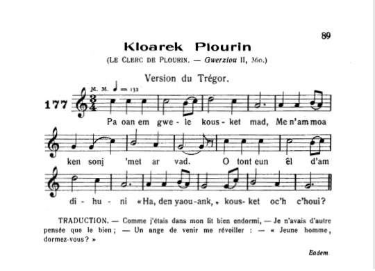
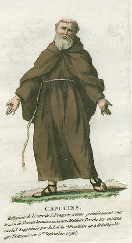

Manac'h Gwilhaouig Ar Gall
Le moine Guillaume Le Gall
Friar William Le Gall
Chant collecté par Théodore Hersart de La Villemarqué
dans le 2ème Carnet de Keransquer (pp. 141 / 75 - 142 et 211 /127 - 211 bis) .

"Kabusin Ar Gwenn", Arrangement Léon-Marie Louyer de Villermay (1852-1914)
|
A propos de la mélodie: Il s'agit ici de "Kloarek Plourin", tiré de "Musiques bretonnes" de Maurice Duhamel (1913), p. 89, chant N° 177, interprêté par Marguerite Philippe à Pluzunet pour un enregistrement phonogarphique de F. Vallée destiné à la Faculté des Lettres de Rennes. Le chant de référence est la version collectée par F-M. Luzel dans ses "Gwerzioù", tome II, page 360, "Kloarek Plourin", le "Clerc de Plourin". L'harmonisation reproduit largement celle composée par le violoniste Léon-Marie Louyer de Villermay (1852-1914) pour une version de cette gwerz chantée par Marguerite Philippe et publiée sous le titre "Kabusin ar Gwen" (le Capucin Le Guen) dans la "Revue de Bretagne" par F. Vallée. Celui-ci écrit:" La mélodie de Kabusin ar Gwen est fort belle et peut prendre rang à côté de celles de "Ar Baradoz" et de "Treinded Santel" pour l'expression du sentiment religieux. De plus ... elle appartient à un mode ancien que M. Bourgault-Ducoudray ne mentionne pas dans son recueil..." Le compositeur L; de Villermay indique dans une note qu'il s'agit du mode hypo-mixolydien et qu'il a utilisé dans son harmonisation successivement l'harmonie grégorienne du 8ème mode et le contrepoint avec une harmonie "moderne" (en 1903). Autre exemple de ce mode: Fhir a chuil duinn as caoile mala (a23, Jeune homme châtain aux beaux sourcils), un chant jacobite cryptique écossais. A propos du texte Le site Ton.kan.bzh consacré à la classification Malrieu donne à ce chant: - la référence M -00152 - le titre critique breton : Ar c’hloareg c’hoant gantañ bezañ kapusin - le critique français : Le clerc qui veut être capucin - le titre critique anglais : The cleric who wants to be a capuchin - thèmes : résumés de vie, destinées, vies de personnages historiques Il recense 5 versions et 8 occurrences, auxquelles il faut ajouter la présente version tirée du 2ème carnet et qui doit avoir été notée entre 1840 et 1844. Si la première partie du chant (str. 1 à 22) est séparée de la seconde (str. 23 à 41), c'est sans doute parce que, quand le chant a été noté, ces parties se trouvaient sur un même feuillet double, dans lequel un cahier de 17 autres feuillets doubles fut inséré par la suite, obligeant La Villemarqué à faire un renvoi: "V. p. 127" Parmi les collecteurs on retrouve les noms habituels : - François Vallée "Kabusin ar Gwen", 1903 (Marguerite Philippe, Pluzunet) - François-Marie Luzel "Kloarek Plourin", 1864 (Anna Salic, Keramborgne) GBI II p. 360. - Jean-Marie de Penguern, "Cabucin"- "Kloareg Kroaz ar Mendi", avant 1856 , MS 112, transcrit par J. Ollivier. - Abbé Jean Mathurin Cadic "Mab ur prins bras galuet de chervij Doué / Vocation du fils d’un grand prince", avant 1893, Revue Morbihanaise 1891-1913, p.312, et un collecteur inhabituel: - Abbé Henri Duine de Kerbeuzec "Le capucin de Tromelin" , Plougasnou, avant 1896, "Cojoù Breiz", 1896 (en français). La présente version est donc la première qu'on ait collectée. Comparaison entre les versions Le site Tob.kan.bzh indique: " - Le clerc de Huelgoat devient capucin dans un grand collège d’Espagne (Vallée ne dit pas pourquoi il titre "Kapusin ar Gwenn"). - Le "Clerc de Kroas ar Mendy" va au couvent "Melin ar roue". - Pour le "Clerc du manoir de Tromelin", sans préciser ses raisons, H. de Kerbeuzec date ce chant du XVIe siècle. Le manoir de Tromelin est situé en Plougasnou. Les ruines de sa chapelle, recueillies, ont formé le sanctuaire du couvent de Pontplancouet, dans la même paroisse. - Le "Clerc de Plourin", de Huelgoat va au couvent de Perhet." - Dans la présente version, le jeune homme s'appelle Guillaume le Gall, mais "Ar Gwenn" (Le Guen) est le nom de jeune fille de sa mère (str. 19). Cependant une variante (str. 22) la nomme "Marig Kelenn" (Marie Quélen). Le jeune homme entre chez les Capucins à Nantes. Il habite Huelgoat. Certaines strophes (le cortège de jeunes gens qui accompagnent son départ, dialogue à propos de son héritage) indiquent clairement que ce clerc est le fils de personnages riches et puissants. Ce chant où s'exprime une foi profonde et sincère ne doit en aucun cas être rangé parmi les "chansons de clercs". |
 |
About the tune This tune is titled "Kloarek Plourin", taken from "Musiques bretonnes" by Maurice Duhamel (1913), p. 89, song No. 177, performed by Marguerite Philippe in Pluzunet for a phonographic roll recording by F. Vallée intended for the Faculty of Letters in Rennes. The lyrics connected to it are the version of the "Clerc de Plourin" collected by F-M. Luzel in his "Gwerzioù", volume II, page 360. The present harmonization largely reproduces that composed by the violinist Léon-Marie Louyer de Villermay (1852-1914) for a version of this gwerz sung by Marguerite Philippe and published under the title "Kabusin ar Gwen" (Le Capucin Le Guen) in the " Revue de Bretagne "by F. Vallée. The latter writes: "The melody of "Kabusin Ar Gwen" is very beautiful and can rank alongside those of "Ar Baradoz" and "Treinded Santel" for the intensity of religious sentiment. On the other hand ... it belongs to an old musical mode that M. Bourgault-Ducoudray does not mention in his book ..." The composer L. de Villermay states in a note that it is the hypo-mixolydian mode and that he used in his harmonization successively the Gregorian harmony of the 8th mode and the counterpoint with a "modern" harmony (in 1903). Another instance of this unusual mode: Fhir a chuil duinn as caoile mala (a23, Brown-haired lad with thin eyebrows), a Scottish cryptic Jacobite song. About the lyrics The Ton.kan.bzh site dedicated to the Malrieu classification ascribes to this song: - the reference M -00152 - the Breton critical title: "Ar c’hloareg c’hoant gantañ bezañ kapusin" - the French critical title: "Le clerc qui veut être capucin" - the English critical title: The clerk who wants to be a capuchin - the themes: summaries of life, destinies, lives of historical figures It lists 5 versions and 8 occurrences of this ballad, to which we should add the present version taken from La Villemarqué's Second Notebook, which should have been recorded between 1840 and 1844. If the first part of the song (str. 1 to 22) is separated from the second (str . 23 to 41), it is undoubtedly because, when the song was noted, these parts were on the same double sheet, into which a ream of 17 additional double sheets was subsequently inserted, causing La Villemarqué to add the hint: "See p. 127" The collectors' names are the usual names: - François Vallée "Kabusin ar Gwen", 1903 (sung by Marguerite Philippe, Pluzunet) - François-Marie Luzel "Kloarek Plourin", 1864 (sung by Anna Salic, Keramborgne) GBI II p. 360. - Jean-Marie de Penguern, "Cabucin" - "Kloareg Kroaz ar Mendi", before 1856, MS 112, transcribed by J. Ollivier. - Father Jean Mathurin Cadic "Mab ur prins bras galuet de chervij Doué / Vocation of the son of a great prince", before 1893, Revue Morbihanaise 1891-1913, p.312 ... plus an unusual collector: - Abbé Henri Duine de Kerbeuzec "Le capucin de Tromelin", Plougasnou, before 1896, "Cojoù Breiz", 1896 (in French). The version at hand should be therefore the oldest record of this ballad with religious background. Comparison between different versions As stated on the Tob.kan.bzh site: "- The "Clerk of Huelgoat" becomes Capuchin in a large college in Spain (Vallée does not givr the reason for the title" Kapusin ar Gwenn "). - The "Clerk of Kroas ar Mendy" goes to the convent "Melin ar Roue". - As for the "Clerk of Tromelin Manor", without elucidating his reasons, H. de Kerbeuzec dates this song from the 16th century. Tromelin Manor is located near Plougasnou. The remains of its dilapidated chapel were used to build the chapel of the Pontplancouet convent in the same parish. - The "Clerk of Plourin", a native of Huelgoat goes to a convent in Perhet." - In the present version, the young man is called Guillaume le Gall, but "Ar Gwenn" (Le Guen) is the maiden name of his mother (str. 19). However a variant (str. 22) names her "Marig Kelenn" (Marie Quélen). The young man enters a Capuchin convent in Nantes. He is a native of Huelgoat. Some stanzas (the procession of young people accompanying him when he leaves, the dialogue about his heritage) clearly show that he is the son of rich and powerful people. This ballad where deep and sincere faith is expressed should by no means be classified among the usual "kloareg ditties". |
|
BREZHONEK p. 141 / 75 Le moine (Mélange avec la Complainte à Mr Nerval) [7] I 1. - Pemp bloaz war-nugent zo bremañ, 'Baoe me oan krouet er bed-mañ. 2. Netra n'am-eus me perc'hennet 'Met ur galon leun a berc’hed. 3. Me a garfe bout er plasig Lec'h ne glefin 'met an trouzig (X) (en marge à gauche:) (X) 4. An trouzig d'eus ar preñved, O krignat ar c'higoù marvet O krignat prenn an arched, 5. Lec’h ne glefin 'met ur pintig Lec'h ne glevin netra bemde, Ma mamm baour, 'met pediñ Doue. - 6. - Gwell eo ganin, ma mab kloareg, ' Chomfec’h er ger ha bout beleg. Plijadur m'am-eus ho kwelet 7. D’ar zul d’ho kwel't dre ar vered Da ganañ dimp an oferenn-bred, 8. - Micher ar beleg zo karguz. Ma ene paour zo morc'heduz. 9. - Ouzhpenn ar garg d'eus ec'h ene D'eus ene re-all 'ma ivez. (en marge gauche verticalement:) ema / emaint (en marge à droite) 10. - Ma zadig paour, mar ma c'harit, Me a yey bremañ d'ar gouent. 11. Choazit ar gouent a garfet, N'hen ho lintr mar karit P. 142 12. – Gwell eo ganin, ma mamm, monet D’ar gouent d’ar Gabusined. [1] 13. Lec'h ne glevin netra bemde Nemet pedennoù da Zoué. – ********************************* II 14. Kriz vije 'r galon na ouelje En Huelgoat neb a vije, 15. Wel't an henchoù bras o leizhañ Gant an dud yaouank na ouelfe, 16. Gant an dud yaouank o ouelañ, Kloareg Ar Gall o tiblasañ : 17. - Keno, ma mamm, keno ma zat, D’am c’hoarezed, avañtur vad; 18. Met d’am breudeur ne laran ket E zeuy d'an Naoned d’am gwelet. - [2] 19. - Janed ar Gwennig a lare War an hent bras pa yae. Da Gwilhaou ‘r Gall (Kloarek Gwenn) an deiz a oe: [3] 20. - Itron Varia, en hoc'h iliz, Gouarnet-c'hwi din ma yaouankiz! ********************************* III 21. - Poent eo dit/dimp mont da wel't hor mab Degas de(zh)añ ur gobrig (un dra) bennak. 22. Janed ar Gwennig ( Marig Kelenn) a lare E ker Naoned pa 'z errue: (V. p. 127) p 211 / 127 23. - Aet eo ar bale-sakr en-dro, Me a glev ma mab o kanañ. 24. N'eo ket c'hoazh an oferenn-bred, Ar proses en-dro d'ar vered. 25. Me wel ma mab gwisket e gris, Ur c'hordenn reun oc'h ober kriz. 26. - Demat deoc’h, ma mab kloareg. - Ha deoc’h ma zad deuet d’am gwel't, Ma mamm baour, hag he-deus yec’hed? 27. - Yac’h eo, a drugarez Doue, Deuet eo d’ho kwelet koulz ha me. Ema e-maez amañ ganin. 28. - O Itron Varia Druez! Fidel eo’r vamm d’ar vugale! [4] 29. Dont hanter-kant lev d’am gwelet Ha biskoazh n'am-eus (n’am-boa ket) dellezet. 30. - Ma mabig paour mar ma c'harit, Bremañ pa z' eomp deut d’ho kwelet, Petra diganimp a (c’houlit) c'hoantait? 31. - Netra diganeoc’h ne c’houlan 'Met ho kimiat da jom amañ. 32. - C'hwi ho-po bennoz hon daou. (Kimiat hon daou c’hwi ho-pefec'h) + 33. Hag un nebeut d'eus hor madoù. Ha lod eus ar madoù a zo. 34. + Me bedo Doue noz ha deiz M'am-bo ma lod e-barzh ane(zh)oc'h. 35. Me bedo Doue deiz ha noz M'am-bo ma lod er baradoz. (*) p. 211 bis 36. Mar 'm-eus madoù evit (heritaj) ma darn, Roit d’ar beorien va bro dre rann. 37. + Ma bedont Doue deiz ha noz M'am-bo ma lod er baradoz. - 38. Er menez Kalvar zo ur we(zh)enn, Ar gaerañ welas den biken, 39. Hag a renkan ar gwelllañ dindanañ Kevret gant Mari Madalen. (**) 40. Keno ma mamm, keno ma zad, Keno en traonienn Jozafat! 41. Barzh baradoz pe war-dro, Gant gras Doue, ni n’em gwelo. - [5] [6] (*) E stumm An Uhel: "N’ c’houlennan tra euz ho mado, /Met un dousenn mouchouero, / Da sec’ha ’r glis hag an daero,/ Pa vinn prezek er parousio." (**) E stumm An Uhel: "War mene Kalvar ’zo ur groaz, / Ar gaera a welis biskoaz; / Eomp holl d’ sikour hi dougenn. / ’Sambles gant Mari Madalenn, / Ni ’welo hon Zalver binniget / Ebars ar groaz krusifiet!" KLT gant Christian Souchon |
TRADUCTION FRANCAISE p. 141 / 75 Le moine (Mélange avec la Complainte à Mr Nerval) [7] I 1. - Il y a ce jour vingt-cinq ans, Que je suis venu dans ce monde. 2. De biens je n'en ai point sinon Un coeur que la malice inonde. 3. Je souhaite être en un lieu de deuil Où je n'entendrais à la ronde (X) (en marge à gauche:) (X) 4. Que le seul bruit des vers qui sondent, Les chairs pourries qui se morfondent, Ainsi que le bois du cercueil, 5. Un seul chant: celui du pinson Chaque jour donnant sa leçon M'enseignant, mère, à prier Dieu. - 6. - Mon fils, tu sais que je préfère -rais que tu sois le vicaire. De ce bourg, afin que mes yeux 7. Chaque dimanche au cimetière Te voient à la messe en ces lieux. 8. - Métier de prêtre est redoutable. Et ma pauvre âme le pressent: 9. Outre son âme, il est comptable De celle d'autrui tout autant. (en marge gauche verticalement:) il est / ils sont (en marge à droite) 10. - Père, ai-je votre permission De me retirer au couvent? 11. - Choisissez-en un mon garçon! Vous avez mon consentement. P. 142 12. – Mère, l'ordre que je préfère Serait celui des Capucins. 13. Chez qui l'on n'entend d'ordinaire Rien d'autre qu'office divin. – ********************************* II 14. Qu'elle eût été cruelle l'âme Qui par Huelgoat eût passé, 15. Et n'eût, voyant sur la grand'route Tous ces jeunes gens assemblés, 16. A leurs pleurs mêlé quelques gouttes Quand le clerc Le Gall s'en allait : 17. - Adieu ma mère, adieu mon père A mes soeurs ma bénédiction! 18. Mais je ne vous dis rien, mes frères: A Nantes nous nous reverrons. - 19. - Jeannette le Guennic devise Avec Guillot (avec le clerc Le Guen) tandis qu'il va Sur la grand'route, ce jour-là: 20. "Dame Marie en votre église Prenez soin de mon jeune gars!" ********************************* III 21. - Il est temps de rendre visite A notre fils, de le doter. 22. Et tandis qu'elle entrait à Nantes, Jeannette Le Guennic ( Marion Le Quélen) disait (Voir. p. 127) p 211 / 127 23. - La procession s'est mise en branle, Et j'entends notre fils chanter. 24. Ce n'est point encor la grand' messe: Le tour d'église a commencé, 25. C'est mon fils dans sa cotte grise, Ceint d'un rude cordon de crin. 26. - Mon fils le clerc, bonjour. - Mon père Est là! Je brûle qu'on me dise Si ma mère se porte bien. 27. - Mais fort bien! A Dieu j'en rends grâce. Elle est venue aussi vous voir. Elle attend dehors sur la place. 28. - La fidélité d'une mère, O Notre-Dame de Pitié! 29. Cinquante lieues qu'elle a dû faire: En quoi l'aurais-je mérité? 30. - Mon cher enfant, voici la cause De notre venue. Tous les deux, Voulons léguer nos biens au mieux. 31. - De vous je n'attends qu'une chose: L'accord pour rester en ces lieux. 32. - Vous avez, soyez en sûr, notre Accord et sans restriction + 33. Quelques-uns de nos biens, en outre, Et nous en avons à foison. 34. + Passer nuit et jour en prière: C'est ce qu'ici-bas j'ai requis. 35. Prier Dieu des journées entières Sera mon lot au paradis.(*) p. 211 bis 36. Je cède ma part d'héritage Aux pauvres gens de mon pays. 37. + Ils prieront Dieu. Leur parrainage Me gagnera ce lieu béni. - 38. Au mont Calvaire il est un chêne Le plus beau que jamais l'on vit- 39. Auprès de Marie Madeleine: Où trouverais-je un tel abri? (**) 40. Nous nous reverrons, père et mère, Dans la vallée de Josaphat, 41. Au paradis ou sa lisière, Si Dieu permet que cela soit. - (*) Version Luzel: "Je ne demande rien de vos biens,/ Si ce n’est une douzaine de mouchoirs,/ Pour essuyer la sueur et les larmes,/ Quand je serai à prêcher dans les paroisses." (**) Version Luzel: "Sur la montagne du Calvaire est une croix, / La plus belle que jamais je vis. / Allons tous aider à la porter, /Avec Marie Madeleine, / Nous verrons notre Seigneur béni / Attaché sur la croix!" Traduction Christian Souchon (c) 2020 |
ENGLISH TRANSLATION p. 141 / 78 The Capuchin friar (Mixed up with "Mr Nerval's Lament") [7] I 1. - Twenty-five years have passed by now And I'm still living here below. 2. I never have owned anything Except a heart that's full of sin. 3. I'd like to dwell in a recess From all mundane ado to rest (X) (left margin :) (X) 4. Hearing but the faint noise of worms Gnawing at the flesh falling from Dead bones and wood of coffin boards, 5. A place where you hear finch's chord And nothing else the whole long day, Mother, than men of God who pray - 6. - My son the clerk, I would find best You might stay with us as a priest. To see you I would be so glad: 7. On Sundays the churchyard you had To cross to sing High Mass for us 8. - But being a priest is no light thing My soul knows the load it may bring: 9. Beside the load of your own soul That of your parish as a whole . (left margin vertically :) we have / they have (right margin) 10. - I beg as gift of my parents' Bounty to go to the convent. 11.- Please, choose the convent that you want, If it is your choice, I consent. P. 142 12. - I prefer, my mother, to be Sent to a Capuchin abbey. 13. A place where friars always pray To God and praise Him night and day - ********************************* II 14. Cruel the heart of whoever may In Huelgoat, keep his tears at bay, 15. On seeing the highway filling up With children, both small and grown up, 16. Young people who're lamenting all When departing from Clerk Legall! 17. - Goodbye my mother, my father, And good luck to you my sisters; 18. To my brothers I say nothing: In Nantes.we will soon be meeting - 19. - Jeanne Leguennic as she rode With the young clerk on the main road. With Guillaume Legal (with the Clerc Leguen) said that day: 20. - Virgin Mary, in your church, may You take care of my boy always! ********************************* III 21. - It's time we went and saw our son And that his heirloom right be done. 22. Jeannette Leguennic (Marion Le Quélen) said on Arriving that day in Nantes town: (See p. 127) p 211 / 127 23. - Around the church the procession Goes and I hear singing my son. 24. High Mass does not start already, They still walk round the cemetery. 25. I see my son. In grey he's dressed, A rough horsehair cord round his waist. 26. - My son the clerk, good day to you! - To you who have come for me, too! Is my dear mother in good health? 27. - Thank God, health is her greatest wealth She came to see you too. Outside She has decided to abide. 28. - How faithful is, Blessed Virgin, A dear mother to her children! 29. Travels fifty leagues to see me O I don't deserve it, surely!. 30. - Now my dear son, if you love me Who have come to see you, tell me: What do you want to inherit? 31. - I ask for nothing, you know it, Except permission to stay here. 32. - We give you our blessing, my dear (Of us both you have permission) + 33. But have some goods in addition. For goods we have in profusion. 34. + To pray to God late and early Was here below bestowed on me. 35. Praying at sunset and sunrise Will be my lot in paradise. (*) p. 211 bis 36. My heirloom you shall give freely To the paupers in my country. 37. + They shall pray to God night and day. That to heaven I find my way. - 38. On Mount Calvary there's a tree, The rarest that was ever seen, 39. Is there a better place to be Than beside Mary-Magdalene? (**) 40. My mother, my father, farewell! We shall meet in Josaphat's vale 41. Or when to paradise we plod, The three of us, so help us God! - (*) Luzel version: "I do not ask for anything from you, / Except a dozen tissues, / To wipe away sweat and tears, / When I am preaching in parishes. " (**) Luzel version: "On Mount Calvary is a cross, / The most beautiful that I ever saw. / Let us all help to carry it, / As did Marie Madeleine, / We will see our blessed Lord / Nailed on the Cross ! " Translation Christian Souchon (c) 2020 |
NOTES
|
[1] Capucins Si H. de Kerbeuzec date ce chant du 16ème siècle c'est peut-être parce que l'engouement du jeune Guillaume Le Gall pour la branche de l'ordre des Franciscains que sont les Capucins trahit la nouveauté de cette institution. Or, après avoir été conçue en 1525 par Matthieu de Baschi, moine franciscain de Montefiorentino aidé des frères Louis et Raphaël de Fossombrone, c'est en 1528 que cette communauté fut approuvée par le Pape Clément VII qui maintenait toutefois ces porteurs de barbes et de capuces plus amples et plus pointus sous la juridictions des "Frères mineurs observantins". Ils furent affranchis de cette obéissance en 1619. La réforme visait à retrouver l'esprit franciscain primitif (pauvreté totale, vie érémitique) tel qu'il est décrit dans la présente gwerz (en particulier aux strophes 3 - 5, 13, 34 - 37). [2] Les capucins de Nantes Dans la version de Luzel, le clerc va au couvent de Perhet. Peut-être s'agit-il de Perret, une localité proche de Rostrenen. Cette ville a vu naître un Capucin fameux, le père Grégoire l'auteur du Dictionnaire franco-breton de 1732. Selon Wikipédia, "les Capucins portaient tous, avant le Concile Vatican II, une robe d'étoffe brune, ou grise dans certains pays de l'hémisphère Sud." Notre gwerz parle de "robe grise" (str. 25). Mystère! Mais ce n'est qu'en 1614 que l'hermitage est remplacé par un couvent doté d'une chapelle, confié aux frères appelés ici "Petits Capucins". La Place des Capucins qui exista ici marqua leur présence à cet endroit. En 1630, on construit un hospice (hôpital). Les Capucins y sont peu nombreux: de 12 en 1729, ils ne sont plus que 7 en 1790. Le monastère est évacué puis vendu en 1793. [3] Le Capucin Le Guen Dans la variante notée à la strophe 19, le jeune clerc est appelé "Kloarek Gwenn", comme dans la version de François Vallée, "Kabusin ar Gwen", chanté en 1903 par la fameuse Marguerite Philippe de Pluzunet. Il s'agit en fait du nom de sa mère, qui conserve son nom de jeune fille après son mariage, comme le veut la coutume de Basse-Bretagne. Elle est désignée par un autre nom, strophe 22: "Marig Kelenn" (Marie Quélen). [4] Notre-Dame de Pitié Les Capucins partagent avec les autres communautés franciscaines une dévotion particulière à ND de Pitié (en breton "Itron Varia a Druez"). Le thème de la Mater Dolorosa inspira la fameuse "séquence" "Stabat Mater" attribuée à un Franciscain italien du XIVème siècle, Jacopone da Todi. Le fait que le Concile de Trente décida d'exclure cette séquence du missel romain en 1570 et qu'elle ne réintégra le bréviaire romain qu'en 1727 ne semble pas pouvoir nous renseigner sur l'ancienneté de la gwerz. Pas plus que l'instauration de la fête de ND des sept douleurs à la fin du XVème - début du XVIème siècle. En effet la muse populaire de Basse-Bretagne avait intimement intégré le dolorisme qui s'exprime dans le poème romain pour en faire un des ses sujets favoris. Alors même que le héros est un criminel comme La Fontenelle, la souffrance qu'il endure en expiant ses fautes le réhabilite aux yeux du barde et se son audience. Les strophes 5 et 6 de l'hymne ont par ailleurs très certainement inspiré la fameuse formule de lamentation "Kriz vije'r galon na ouelje e... nep avije, gwelet...." (cruel le coeur qui n'eût pleuré à... en voyant, etc.) que la présente gwerz utilise aux strophes 14 à 16. Le passage du modèle en question est le suivant: 5. Quis est homo qui non fieret / Matrem Christi si videret / In tanto supplicio? 6.Quis non posset contristari / Christi Matrem contemplari / Dolentem cum filio? 5. Quel est l'homme qui n'eût souffert / Voyant qu'à la mère du Christ / Sont infligées tant de souffrances? 6. Qui n'eût partagé sa tristesse / En contemplant la mère du Christ / Pleurant sur la mort de son fils? [5] Images inhabituelles La métaphore inhabituelle de l'arbre pour désigner la Croix et l'étonnante géographie de l'autre-monde où le paradis et ses alentours jouxtent la vallée de Josaphat (str.38 - 41: "en traonienn Jozafat, barzh baradoz, pe war-dro") pourraient illustrer la troisième revendication majeure des Capucins: la liberté de prédication. On est aussi frappé par l'évocation dans la gwerz de Marie-Madeleine qui, dans les quatre évangiles, contrairement aux apôtres fut témoin de la Passion du Christ et fut le premier témoin de Sa résurrection. Pour les Pères de l'Eglise elle fut un apôtre et même l'Apôtre de Apôtres, jusqu'à ce que le pape Grégoire le Grand l'assimile à la pécheresse de l'évangile de Luc, vers 591. La corde qui sert de ceinture aux Franciscains a-t-elle un rapport avec le fait que Marie-Madeleine est la patronne des cordiers, métier exercé par les lépreux? L'assonnance entre les toponymes "La Maladredrie" (=léproserie") et "La Madeleine" en a souvent fait des synonymes. Il faut attendre 1969 pour que le pape Paul VI déclare que Madeleine ne doit plus être fêtée comme « pénitente », mais comme « disciple », l'Église préférant la mettre en valeur via le texte de Jean. Le fameux "Da Vinci code" (et les ouvrages dont il s'inspire sans les citer clairement) pose avec les élucubrations qu'il échafaude autour de ce personnage de vraies questions au premier rang desquelles la place de la sexualité dans le christianisme et le refoulement du féminin dans les religions, tout au moins dans les 3 grandes religions issues de la Bible, juive, chrétienne et Islam. Chez les chrétiens, le culte de la Vierge mère et la dévotion à la Pécheresse repentie, deux archétypes qui rappellent étrangement des modèles païens, n'ont jamais réussi à compenser la masculinisation à outrance du divin. [6] Le mépris de la chair Les effarantes 4 premières strophes de la présente gwerz illustrent de façon saisissante une conséquence de la masculinisation du divin et un formidable paradoxe: le christianisme, religion de l'Incarnation est devenu la religion du mépris de la chair et du rejet du corps au profit de l'âme. Parallèlement la question de la sexualité niée ou condamnée devenait la névrose du christianisme (et le sujet de plusieurs gwerzioù, telle que celle des "Trois moines rouges"). Pourtant, on ne trouve dans les paroles de Jésus rapportées par les Evangiles aucune trace d'un dualisme entre le corps tentateur et méprisable et l'âme pure et admirable. Cette notion semble avoir été introduite par les Pères de l'Eglise sous l'influence d'autres courants spirituels qu'ils déclaraient combattre, les philosophies dualiste, gnostique, manichéenne ou platonicienne. On sait combien depuis une vingtaine d'année cette déviation est devenue un problème brûlant par les scandales qu'elle engendre. Le pape François qui porte un nom choisi en mémoire de saint François d'Assise, le fondateur des Franciscains, saura-t-il le résoudre? [7] "Mélange avec la Complainte à M. Nerval" Peut-être cette remarque inscite au crayon à droite du titre et entourér d'un trait circulaire, vise-t-elle la "Complainte sur la Mort de haut et puissant seigneur le Droit d’Aînesse," à propos d'une tentative, à l'initiative du Garde des Sceaux, de rétablir le droit d'ainesse et écartée le 8 avril 1826 par le Sénat . Ce texte parut en avril et juin de la même année, accompagné de commentaires et de notes de "Cadet Roussel", alias l'essayiste Félix Bodin(1795-1837). Nadar affirme que 2 des 22 strophes, les 2 dernières, de cette Complainte sont de Gérard de Nerval. A part la proximité du sujet et la strophe IX qui signale l'appui au projet apporté par un procureur de Bretagne, on ne voit pas trop en quoi consiste le "mélange" de cette complainte avec la présente pièce. A moins qu'il ne s'agisse de la strophe 19: On avait bien raison d’être Peu content de ce bagoût : Tout le monde n’a pas goût À se faire moine ou prêtre, Et les filles, bien souvent, N’aiment guère le couvent. |
[1] Capuchins We may suppose that H. de Kerbeuzec dates this song from the 16th century because the fanatic infatuation of the young Guillaume Le Gall for the branch of the Franciscan order known as Capuchins could betray the novelty of this institution. This movement was initiated in 1525 by Matteo di Baschi, a Franciscan friar of Montefiorentino and supported by the brothers Luiggi and Raffaele di Fossombrone. In 1528 this reform was approved by Pope Clement VII who maintained however these bearded friars in their wide hooded robes under the jurisdiction of the so-called "Observant Friars Minor". It was not until 1619 that they were freed from this obedience. The reform was aimed at restoring the genuine Franciscan spirit (total poverty, eremitic life) which pervades the present gwerz (see in particular stanzas 3 - 5, 13, 34 - 37). [2] Capuchins in Nantes In Luzel's version, the clerk is said to enter the "Perhet convent". Maybe we should read "Perret", a locality near Rostrenen. The latter city saw the birth of a famous Capuchin, Father Grégoire, the author of the 1732 Franco-Breton Dictionary. According to Wikipedia, "all Capuchins wore, before the Second Vatican Council, a robe of brown, or of grey cloth in some southern hemisphere countries." Why does the present gwerz mention a "grey dress" (str. 25)? But it was not until 1614 that the hermitage was replaced by a convent with a chapel run by the so-called "Little Capuchins". The former Place des Capucins marked their presence there. In 1630, a hospice was appended. The friars dwelling there were few: from 12 in 1729, their number had decreased to 7 by 1790. The monastery premises were evacuated, then sold in auction in 1793. [3] Capuchin Le Guen In a variant inserted in stanza 19, the young cleric is called "Kloarek Gwenn", as in François Vallée's version, "Kabusin ar Gwen", sung in 1903 by the famous Marguerite Philippe at Pluzunet. "Gwenn" is actually the name of the clerk's mother, who kept her maiden name after her marriage, as was usual in Lower Brittany. She is referred to by another name, in stanza 22: "Marig Kelenn" (Marie Quélen). [4] Our Lady of Sorrows The Capuchins share with the other Franciscan communities a particular devotion to Our Lady of Sorrows (in Breton "Itron Varia a Druez"). The subject of the Sorrowful Mother inspired the famous hymn "Stabat Mater" attributed to a 14th century Italian Franciscan, Jacopone da Todi. The fact that the Council of Trent decided to suppress this liturgical sequence from the Roman missal in 1570 and that it was not restored to it until 1727 does not allow any inference about the antiquity of the gwerz. Nor does the establishment of the celebration of Our Lady of the Seven Sorrows in the late 15th - early 16th centur, since the folk poetry of Lower Brittany had thoroughly integrated the woefulness expressed in the Roman poem to make it one of its favorite features. Even when the protagonist is a criminal character like La Fontenelle, the suffering he endures by expiating his faults rehabilitates him in the eyes of the bard and his audience. The verses 5 and 6 of the hymn have moreover certainly inspired the famous lamentation formula in the Breton gwerzioù: "Kriz vije'r galon na ouelje e ... nep a vije, o gwelet ...." (cruel the heart which would not have cried in ... on seeing, etc.) that this gwerz uses in stanzas 14 to 16. These verses in the model are: 5. Quis est homo qui non fieret / Matrem Christi si videret / In tanto supplicio? 6. Quis not posset contristari / Christi Matrem contemplari / Dolentem cum filio? 5. Who would not have suffered / Seeing the mother of Christ / Inflicted by so much suffering? 6. Who had not shared her sadness / Seeing the mother of Christ / Crying over the death of her son? [5] Unusual images The unusual metaphor of the tree applying to the Cross and the astonishing geography of the otherworld where paradise and its outskirts adjoin the Josaphat valley (str.38 - 41: "en traonienn Jozafat, barzh baradoz, pe war-dro") could illustrate the third major claim of the Capuchins: freedom of preaching We are also puzzled by the evocation of Mary Magdalene who, as stated in all four Gospels, unlike the apostles witnessed the Passion of Christ and became the first witness to His resurrection. For the Church Fathers, she was an apostle in her own right and even the Apostle to the apostles, until Pope Gregory the Great identified her with the sinner in the Gospel of Luke, around 591. Does the rope round the waist of each Franciscan friar have anything to do with the fact that Mary-Magdalene is the patron saint of ropemakers, a trade followed by lepers? The similarity between the toponyms "La Maladredrie" (= leper colony) and "La Madeleine" often made them synonymous. It was not until 1969 that Pope Paul VI declared that Magdalene should no longer be celebrated as a "penitent", but as a "disciple", which is the way she is presented in the Gospel of John. The famous book "Da Vinci code" (and the works on which it draws without openly quoting them), for all the wild imaginings around this character, deals with truly importantl questions the foremost of which concerns the place of sexuality in Christianity and the repression of the feminine in religions, at least in the three religions of the Book, Jewish, Christian and Islam. The worship of the Virgin mother and devotion to the repentant sinner woman are two archetypes which strangely remind us of pagan models. They never could counterbalance the excessive masculinization of the divine. [6] Contempt for the flesh The terrifying first 4 stanzas of this gwerz illustrate in a striking way a consequence of the masculinization of the divine and a formidable paradox: Christianity, though a religion of the Incarnation has become the religion of contempt for the flesh and rejection of the body in favour of the soul. At the same time the question of denied or condemned sexuality became the most arduous issue for Christianity (and the subject of several gwerzioù, such as that of the "Three Red Monks"). However, we find in the words of Jesus as recorded in the Gospels no trace of dualism between the tempting and despicable body and the pure and admirable soul. This notion seems to have been introduced by the Church Fathers under the influence of other spiritual currents which they declared to fight, Dualism, the Gnostic, Manichean or Platonic philosophies. We know how much, in the course of twenty years, this deviation has become a burning problem, considering the scandals it generates. Pope Francis chose his name to honour Saint Francis of Assisi, the founder of the Franciscans. Will he be able to solve this problem? [7] "Mixed up with Mr. Nerval's lament" Perhaps this remark, written in pencil to the right of the title and surrounded by a circular line, applied to the "Lament for the Death of High and Powerful Lord Right of the First-born," about the back then Keeper of the Seals' attempt to restore the old birthright. It was ruled out on April 8, 1826 by the Senate. Said lament appeared in April and June of the same year, accompanied by comments and notes by "Cadet Roussel", alias the essayist Félix Bodin (1795-1837). Nadar affirms that the last 2 of the 22 stanzas of this Lament are by Gérard de Nerval. Apart from the proximity of the subjects and stanza IX of the lament which mentions that the project was supported by a prosecutor of Brittany, one does not really see in what consists the "mixture" of this complaint with the present poem. Unless this rematk points to stanza 19: We were right, not to be Happy with this speech Not everyone wants To become a monk or a priest, And girls, very often, Don't like the idea of going to a convent. |
Ce chant est suivi d'éléments de Filhorez an Aotrou Gwesklen

Procession de ND de Pitié à Trégornan (Rostrenen)